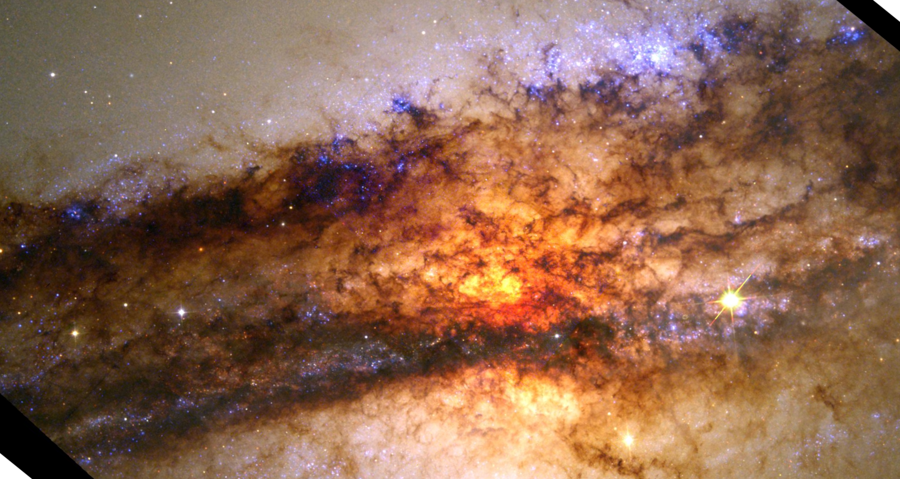

CO WYDARZYŁO SIĘ 10 STYCZNIA?
Poza najważniejszym wydarzeniem dnia dzisiajszego, co jeszcze tak właściwie miało miejsce 1o stycznia? Zazwyczaj inne rzeczy które dzieją się tego dnia są przyćmione przez niesamowity blask The Birthday GirlTM ale w tym zestawieniu rzucimy na nie troche ich własnego blasku.
- - Jakiś tam juliusz cezar wypowiedział wojnę jakiemuś tam Pompejuszowi 10 stycznia 49 roku p.n.e. i guess
- - w 1968 roku amerykańska sonda Surveyor 7 wylądowała na księżycu (fun fact stany zjednoczone nie istnieją, zostały wymyślone żeby oszukiwać ludzi, tak samo jak księżyc)
- - w 2005 roku urodził się też kanał sportowy eurosport 2🥳🥳🥳
- - w galaktyce Centaurus A. urodziła się nowa gwiazda! mam nawet zdjęcie 
- nie jestem pewna gdzie konkrenie znajdują sie narodziny tej gwiazdy ale nadal myśle że to całkiem slay zdjęcie
- - 10 stycznia 1863 otworzono też pierwszą linie metra! znajdowała się w Londynie. Gdy otwarto pierwszą trasę miała ona tylko 6km długości!
- generalnie to chyba serio zagarnełaś wszystko dla siebie z 10 stycznia bo reszta rzeczy nie jest nawet troche ciekawa albo są to rzeczy coś w stylu "zamach terrorystycny zmarło 6 osób" a to chyba nie jest dobra rzecz do włożenia w taką liste. moim osobistym faworytem z tej listy jest postanie kanału eurosport 2 bo jest to bardzo randomowe i sie nie spodziewałam